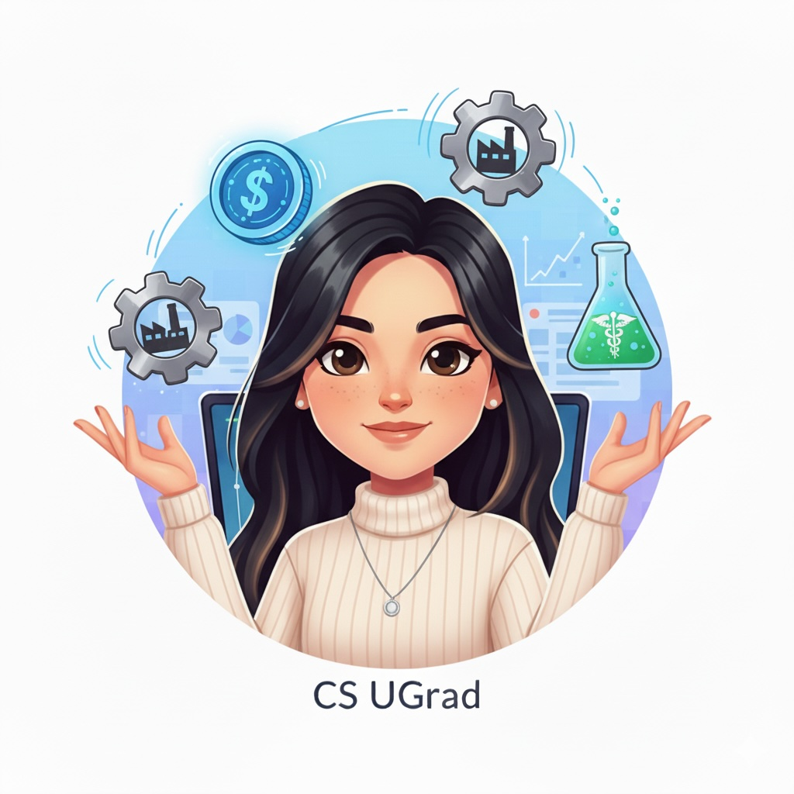
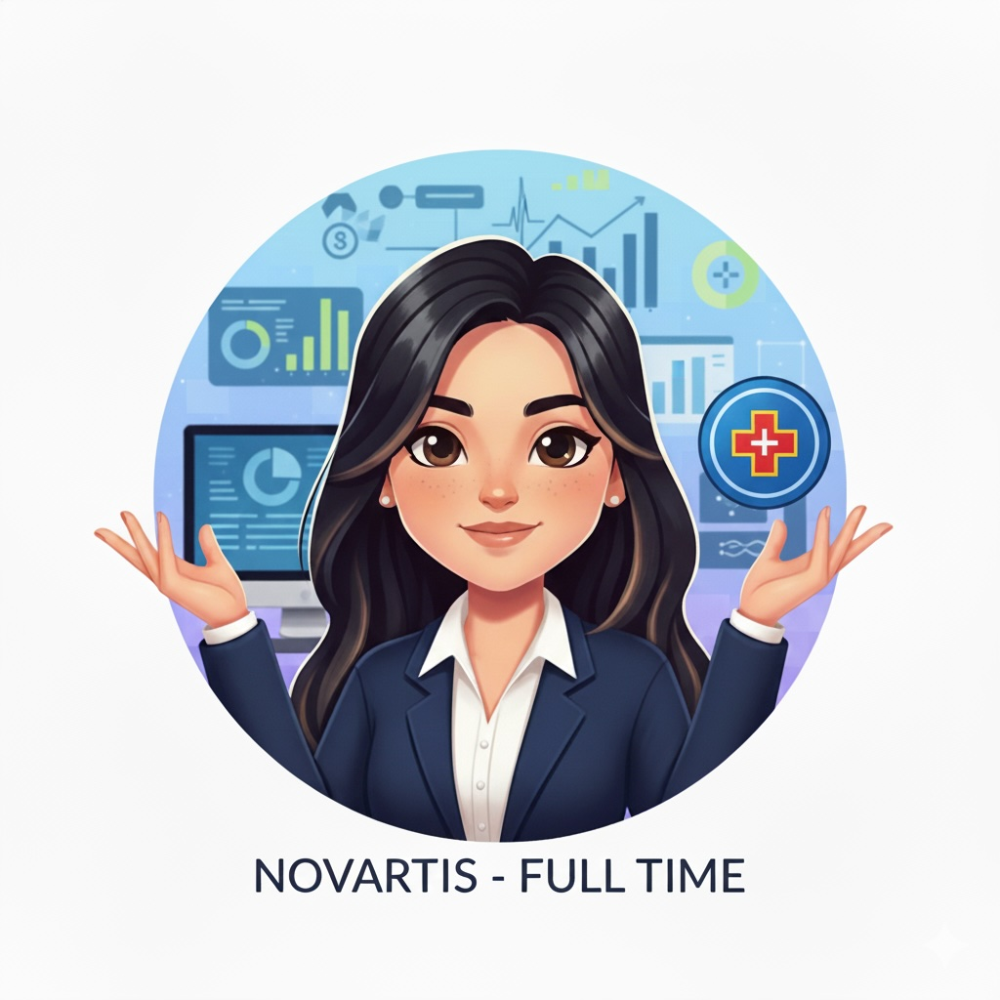
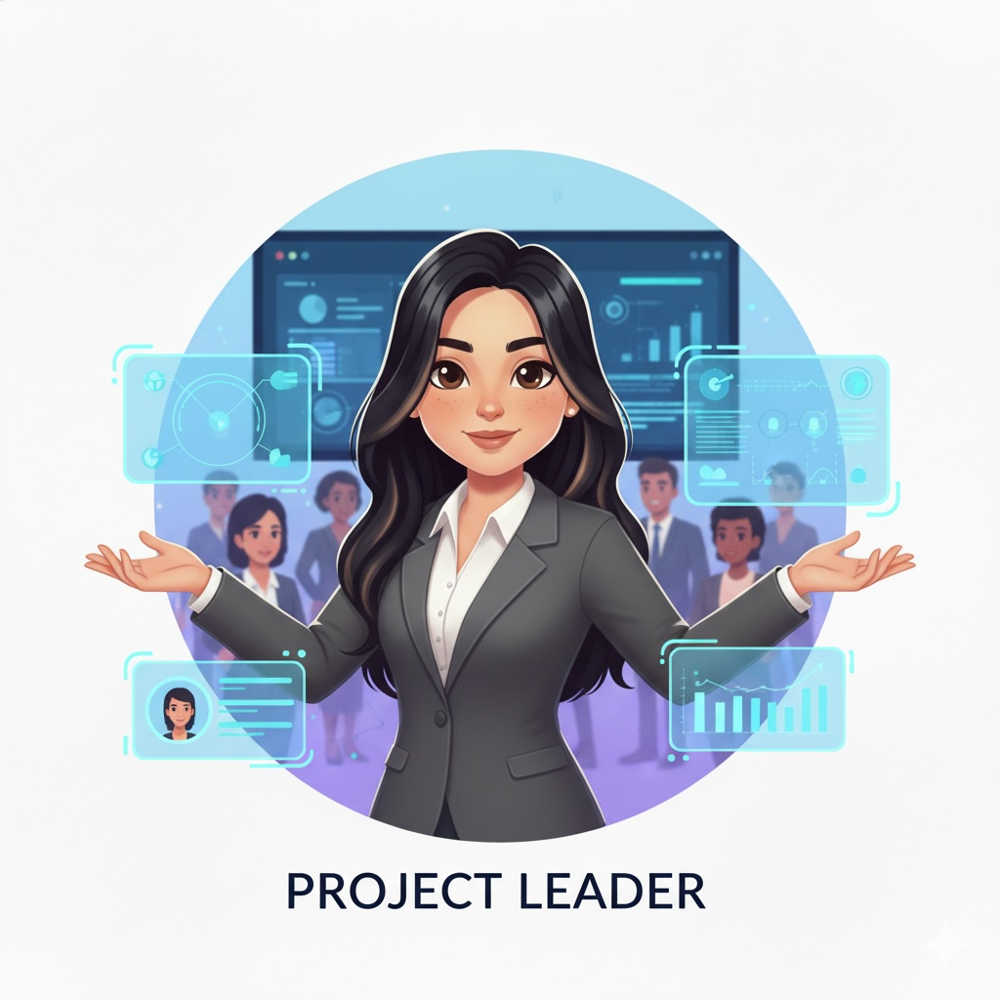

Supply Chain Analytics
Forecasting, inventory, and KPI design that reduce stockouts and waste. ETL and data quality baked‑in.
S&OPSAP dataLead‑timeVisual KPIs
Data Analytics • Supply Chain Strategy • Sustainability
MSc Business Analytics (Warwick) with 2+ years in global supply chain at Novartis. I turn messy, multi‑source data into clear narratives and pragmatic tools — from KPI frameworks and automated pipelines to assurance‑ready sustainability reporting at scale.
Forecasting, inventory, and KPI design that reduce stockouts and waste. ETL and data quality baked‑in.
GHG Scope 1–3 reporting, audit‑ready data pipelines, and governance. Net Zero roadmaps grounded in operations.
Dashboards and tools that make good decisions obvious. Storytelling, design systems, and stakeholder alignment.
Computer Science taught me to think like a builder—hardware bits, software stacks, and the habit of continuous learning.
ITC (manufacturing), HighRadius (fintech), and Novartis (supply chain). Different sectors, same goal: find the signal in the noise.

2 years in Global Supply Chain: automated Alteryx/SQL workflows, KPI dashboards, and sustainability analytics for 800+ vendors.

Shifted from cool tech to business outcomes. Built models for optimisation (83%), supply chain analytics (81%), and statistics.
Team lead for GHG inventory & reporting; cut data‑gathering time ~40%, improved integrity ~25%, and set up a repeatable reporting cycle.

I treat my career like an always‑on training loop—continually fine‑tuning skills and exploring new ones. I seek stretch projects, ship small improvements often, and keep a backlog of ideas to test in the real world.
Developed a PowerBI dashboard to track and analyze ESG performance metrics using a customized SMART KPI framework.
This project involved defining and implementing **SMART Key Performance Indicators (KPIs)** across environmental, social, and governance domains. The resulting interactive dashboard allowed stakeholders to benchmark progress, identify areas of risk (e.g., water intensity), and simulate the financial impact of sustainability initiatives. The solution integrated data from disparate sources, demonstrating strong skills in data governance, business intelligence, and strategic reporting to meet institutional ESG requirements.
Based in Solihull, UK. Open to roles across the UK and Europe.
Email: neogisanj@gmail.com • LinkedIn: sanjananeogi • Phone: 07503 239328